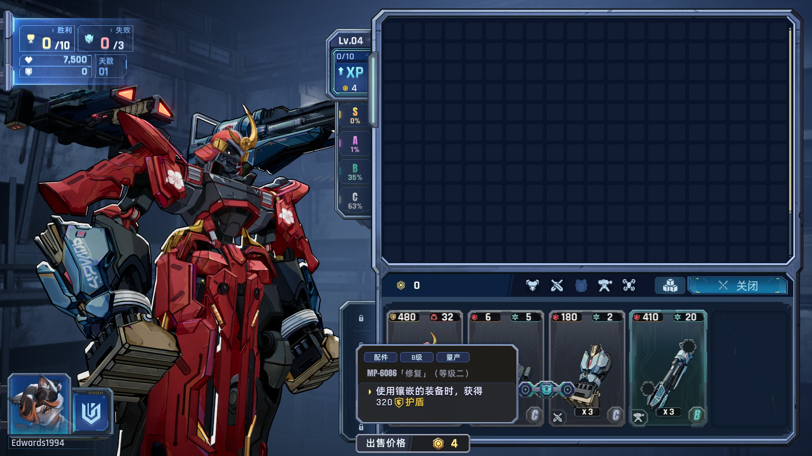
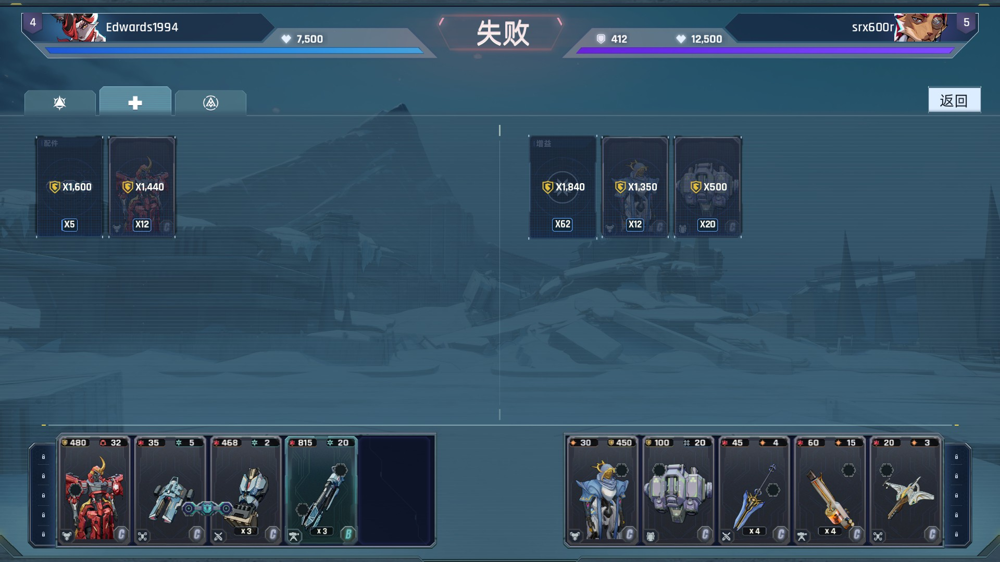
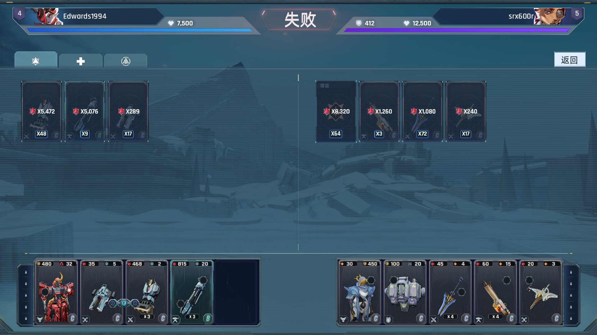

状态：候选，机制语义未排除；不能确认游戏错误。2026-11-16，Demo 1.0.0.2218，第三局第1天，若茜。
将B级MP-6086「修复」（使用镶嵌的装备时获得320护盾）连接在C冷无人机右下槽和C冷枪左下槽。装配图显示两端均连接。首日战斗结束，防御统计仅显示手武1600、装甲1440，无无人机护盾条目。
条件预期：若部署召唤物或召唤物攻击属于使用这件装备，无人机端应触发护盾。实际：目前仅手武端可由统计确认。替代解释：召唤卡只部署、召唤物攻击不算使用卡牌；或统计归属不同。需要同一配件在主动装备端对照并逐帧观察无人机部署时生命/护盾变化；本轮尚无足够证据判定漏算。


